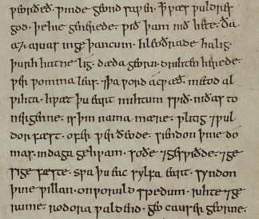
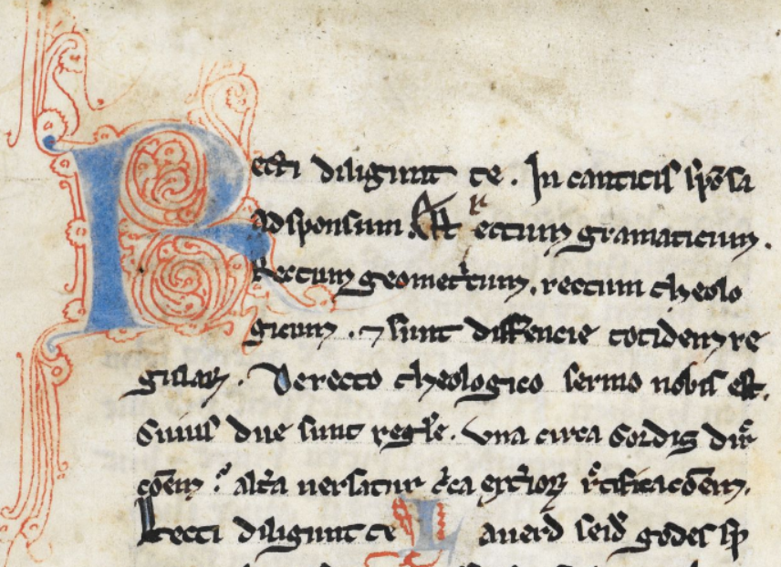

Text Analysis with Lexos
Workshop on Building and Strengthening Digital Humanities through a Regional Network at San Diego State University, October 23-24, 2015
Scott Kleinman, California State University, Northridge / scott.kleinman@csun.edu
What is Text Analysis
My current definition:
(Computationally) finding quantitative patterns in natural language samples and attributing meaning to these patterns.
Digital Text Analysis and the Disciplines
 Ted Underwood, Seven ways humanists are using computers to understand text
Ted Underwood, Seven ways humanists are using computers to understand text
Examples of Visualising Texts and Feature Selection
(Scroll down)
Voyant Provides a Number of
Visual Tools for Text Exploration
The 1840 Democratic Political Party Platform visualised in Voyant (http://voyant-tools.org/)
Google N-Gram Viewer Shows the Frequency of Words
and Phrases in the Google Books Corpus
Occurrences of the phrases phrases "government", "constitution", "federal government" visualised in the Google N-Gram Viewer (https://books.google.com/ngrams)
Statistical Procedures Can Provide
Insight into Authorship and Genre
 Christof Schöch's Principal Component Analysis for four sets of Renaissance French plays
Christof Schöch's Principal Component Analysis for four sets of Renaissance French plays
Many Tools for Text Analysis and Other
DH Methods Are Listed in the DiRT Directory
DiRT Directory: http://dirtdirectory.org/
Text Analysis Workflow 1
- Pre-Processing
- Statistical Processing
- Visualisation
- Narrative of Meaning
Pre-Processing
- Clean up OCR
- Remove metadata, punctuation, digits, stop words
- Transform tokens (consolidation, lemmatisation)
- Slicing and dicing
- Assigning labels
Pre-processing creates a "deformed" version of the original text for analysis.
Statistical Processing
- Token counting (e.g. characters, words, n-grams)
- Normalisation (e.g. to compare texts of unequal size)
- Frequency/Probability Comparison (e.g. between the number of times a word occurs in two texts)
- Clustering (identifying groups of tokens/texts with common statistical properties)
- Shape quantitative information about the texts for visualisation/interpretation.
Statistical processing transforms the text from natural language to quantitative data. This type of “deformance” typically involves dimensionality reduction, a simplification of the data so that it can be represented in two-dimensional space.
Visualisation
- Arranging quantitative data in graphical format to make it (hopefully) more interpretable than formats in which the data is stored.
- Visualisation is “the reification of misinformation” (Johanna Drucker), so it requires a clear account of the procedures used to make the graph and critical literacy about how to interpret visualisations on the par of the reader.
Narrative of Meaning
- An account of the significance of the results of text analysis.
- Must include an account of the decisions made as part of pre-processing, statistical processing, and visualisation.
Text Analysis Workflow 2
- Re-consider some of the decisions you have made.
- Repeat Text Analysis Workflow 1.
Useful Terminology
- Document: a whole text or a segment of a text.
- Token: an individual occurrence of a countable item in a document (typically a word).
- Term (also Type): A distinct form of a token that may occur one or more times in a document.
- Lemma: The “dictionary headword” form of a token without morphological or spelling variants.
- Bag of Words: Set of tokens or terms lacking their order or placement in the original source text(s).
- Document-Term Matrix (DTM): A table showing the number of times each term occurs in each document.
Sample Document-Term Matrix
| Term 1 | Term 2 | Term 3 | Term 4 | ... | |
|---|---|---|---|---|---|
| Document 1 | 50 | 27 | 3 | 12 | |
| Document 2 | 75 | 3 | 1 | 1 | |
| Document 3 | 64 | 1 | 1 | 1 | |
| Document 4 | 31 | 12 | 5 | 10 | |
| ... |
A Basic Epistemological Question
If each stage is a transformation (“deformance”) of the source text, how do we relate the results of this transformation to the original?
Challenges for Humanists
- Technical difficulties (lack of coding skills or appropriate tools)
- Fear of statistics/seduction of the black box
- Scepticism of the ability of statistical patterns to capture meaning in linguistic/cultural objects
- 80% of the work in collaborating with computers is pre-processing
Lexos and Lexomics
Lexos is an easy-to-use tool that handles many the basic tasks in a typical text analysis workflow.
Lexos arose from the Lexomics project, which seeks to use computational approaches to study patterns in literature. Literature and computer science students work alongside one another doing research and developing tools in response to questions generated by the research.
The next slide (which may load slowly) shows some scenes from one of our summer research sessions.
Goals of Lexos
- Easy-to-use.
- Provide a complete workflow.
- Cater to small and medium-sized corpora.
- Cater to non-standard languages and languages with non-Latin writing systems.
- Embed the critical process into the user interface.
How to Install Lexos Locally
https://github.com/WheatonCS/Lexos/tree/master/0_InstallGuides
(We will be improving the installation instructions soon.)
How to Report Issues, Bugs, Feature Requests
https://github.com/WheatonCS/Lexos/issuesLearning Lexos
The following slides provide some sample experiments with Lexos that showcase many of its important features. Sample texts are in the TestSuite folder of your local installation. If you do not have a local installation, you can download the TestSuite files at https://github.com/scottkleinman/Lexos-TestSuite.
The "DAZ" Experiment
(Scroll down)
- Source Texts:
https://github.com/WheatonCS/Lexos/tree/master/TestSuite/Experiments/AngloSaxon/DAZ/FilesToUse - Instructions:
https://github.com/WheatonCS/Lexos/blob/master/TestSuite/Experiments/AngloSaxon/DAZ/_README_DAZ.txt - Purpose: Find a section in a text that is similar to a different text.
- Background: Daniel is an Anglo-Saxon versification of the biblical book of Daniel. It has long been known that a section of the poem (lines 279-408) bears a relationship to another another Old English poem, Azarias, although one is not the direct source of the other.
Methodological Questions
- Can we reproduce traditional scholarly results using “bag of words” methods and cluster analysis?
- What kind of challenges do we face working with texts in Old English?
Pre-Processing Considerations
- Source Texts: Dictionary of Old English Corpus encoded in SGML. We need to remove the SGML tags.
- Special Characters: Old English æ, ð, and þ. These are encoded as SGML
&ae;,&d;, and&t;. We want to change them to Unicode representations. - Spelling Variants: Old English scribes can use and or ond spellings for the same word. We may want to count them both together.
Uploading, Scrubbing, and Cutting
- Go to Manage > Upload. Click Browse and navigate to the
DAZ/FilesToUsefolder. Select A1.3_Dan_T00030.txt and A3.3_Az_T00130 (the texts of Daniel and Azarias). - Go to Prepare > Scrub. Click the chevron next to Lemmas and click the Upload File button. Select DAZ_lemma.txt. This will cause Lexos to treat and and ond as the same form.
- Click the chevron next to Consolidations and click the Upload File button. Select DAZ_consolidation.txt. This will change all examples of ð to þ.
- Click the chevron next to Special Characters and selection Dictionary of Old English SGML from the dropdown menu. This will tell Lexos to convert SGML character encodings to Unicode equivalents.
- Go to Manage > Select. Hold down the control/command key and click on the row containing A3.3_Az_T00130 to de-activate it.
- Go to Prepare > Cut. Enter 450 as the segment size. Click the Preview Cuts button to see the results. Click the Apply Cuts to apply them permanently.
- Return to Manage > Select. Hold down the control/command key and click on the row containing A3.3_Az_T00130 to re-activate it.
Hierarchical Clustering
A form of cluster analysis that seeks to detect similarities between documents by sorting them into hierarchically related clusters.
Considerations:
- What do you want to cluster, whole documents or segments?
- Distance Metric (how to measure the distance between clusters)
- Linkage Method (how clusters should be merged)
- Visualisation: How to read a dendrogram
Instructions
For this experiment, the default distance metric and linkage method options are fine.
- Go to Analyze > Clustering > Hierarchical Clustering.
- Enter a Dendrogram Title and click Get Dendrogram. You may need to scroll down to see the result.
Segment 5 of Daniel should cluster with Azarias. This is the portion of Daniel that we know to be related to Daniel.
How to Read a Dendrogram
Observing the Influence of Orthography in Middle English
(Scroll down)
- Source Texts:
https://github.com/WheatonCS/Lexos/tree/master/TestSuite/Experiments/MiddleEnglishTexts/FilesToUse - Purpose: Determine what effect orthography has on document similarity.
Background
- Middle English is characterised by a high number of dialectal features and spelling variations, which can create challenges for computational processing and make comparison difficult.
- The AB language is a term coined in 1929 by J.R.R. Tolkien to refer to the standardised language of two manuscripts of Ancrene Wisse, a guide for anchoresses.
- The language is shared by a group of texts from the English West Midlands including Hali Meiðhad ("Holy Maidenhood"), Sawles Warde ("Refuge of the Souls"), and a life of Saint Juliana.
- The Lambeth Homilies is a collection of sermons which also comes from the West Midlands but does not share the AB language forms. The Kentish Sermons come from southeastern England.
- In order explain the dendrogram we get if we compare these texts, it is useful to get a sense of the relative prominence of certain words.
Instructions
- Go to Manage > Upload. Click Browse and navigate to the
MiddleEnglishTexts/FilesToUsefolder. Upload all the texts. - Go to Analyze > Clustering > Hierarchical Clustering.
- Enter a Dendrogram Title and click Get Dendrogram. You may need to scroll down to see the result. Notice that the West Midland texts (Ancrene Wisse, Sawles Warde, Juliana, Hali Meiðhad, and the Lambeth Homilies) are split into two clusters. The Kentish Sermons seem to be closer to the Juliana group. How do we know what accounts for this?
- Go to Visualize > MultiCloud. Click Toggle All to select all the texts. Then click Get Graphs. You may need to scroll down to see the result.
- Are there spellings that seem to dominate certain texts? You can drag and drop clouds to re-order them for easier comparison.
- Try the Word Cloud and BubbleViz tools in the Visualize menu for further insight. Can you identify what might be affecting the clustering algorithm?
Instructions (Continued)
- Go to Prepare > Scrub. Click on the chevron next to consolidations and enter
þet,þat:þat ant,and:and
Click. Apply Scrubbing. This will consolidate spelling variants of these words into one form each. - Go to Analyze > Clustering > Hierarchical Clustering and click the Get Dendrogram button.
Notice that all the West Midlands texts form a single cluster. There is a good chance that the Kentish Sermons most closely resemble the Lambeth Homilies because they share a common genre (sermon). However, the clustering algorithm seems to be more sensitive to the dialectal orthography than to the genre.
Using word clouds, we have been able to identify what disrupts this pattern in order to obtain clearer results.
Uses of Word Clouds for Document Exploration
- Get an impression of the content of your documents.
- Identify Stop Words or Other Scrubbing Needs.
- Useful way of conveying token prominence in presentations.
- Can be used to visualise the topics in a topic model (see Visualizing Topic Models below).
The Dream of the Red Chamber Experiment
(Scroll down)
 A page from the "Jimao manuscript" (己卯本) of the novel Dream of the Red Chamber, 1759. This is one of the earliest surviving manuscripts of the novel before its print publication.
A page from the "Jimao manuscript" (己卯本) of the novel Dream of the Red Chamber, 1759. This is one of the earliest surviving manuscripts of the novel before its print publication.
- Source Texts:
https://github.com/WheatonCS/Lexos/tree/master/TestSuite/Experiments/SimilarityQuery/红楼梦HongLouMeng_Dream_of_the_Red Chamber - Purpose: Explore issues of authorship attribution.
Background
Dream of the Red Chamber, composed by Cao Xueqin sometime in the middle of the 18th century, is one of China's Four Great Classical Novels. The novel circulated in manuscript copies until its print publication in 1791. While the first 80 chapters were written by Cao Xueqin, Gao E, who prepared the first and second printed editions with his partner Cheng Weiyuan in 1791–2, added 40 additional chapters to complete the novel. [Source: Wikipedia]
Cosine Similarity
Cosine similarity ranks documents based on their similarity (the inverse of document distance) but does not attempt to cluster them.
Instructions
- Go to Manage > Upload. Click Browse and navigate to the
SimilarityQuery/红楼梦HongLouMeng_Dream_of_the_Red Chamberfolder. Upload all the texts. - Go to Analyze > Similarity Query. Select Chapter67 to be compared to the other files.
- Since Chinese does not use spaces between words, choose 1-gram by Characters in the Tokenize section. This will treat each character as a token.
- Click the Get Similarity Rankings button.
What might we conclude about the authorship of Dream of the Red Chamber from the reulting rankings?
The Pride and Prejudice Experiment
(Scroll down)

Source: Lilly Library, Indiana University
- Source Text:
Lexos/TestSuite/Experiments/RollingWindow/FilesToUse/pride_and_prejudice_ms.txt - Purpose: Examine or compare the frequency of terms over the course of a text.
Background
A common task in text analysis is to observe changes in linguistic usage over the course of a text or collection. The Lexos Rolling Windows tool creates a visualisation of these changes.
For this experiment, we will use a version of Jane Austen's Pride and Prejudice with milestones added at each chapter break. Milestones are strings of text used by Lexos to identify structural divisions. Although we have used chapters, you can place them anywhere in the source text(s).
Rolling Windows
- Traces the frequency of features within a designated window of tokens over the course of a document.
- Can be used to identify small- and large-scale patterns of usage of individual features or to compare these patterns for multiple features.
Experiment 1:
- Go to Manage > Upload and upload pride_and_prejudice_ms from the
RollingWindow/FilesToUse. This file has the string Milestone inserted at each chapter break. - Go to Rolling Windows and select the options represented below:
Count Type: Rolling Average
Unit of Window: Window of Words
Unit of Token: of Word(s)
Size of Rolling Window:
Document has Milestones
Milestone Delimiter:
Enter a word or words you wish to search.
Experiment 2:
- Go to Prepare > Scrub
- Upload or copy and paste the Glasgow stop word list. Click the Apply Scrubbing button.
- Repeat Experiment 1.
What changes? Why?

Visualizing Topic Models
- Source File:
Lexos/TestSuite/malletfile/Beowulf_1200-word-topic-counts - Purpose: Examine or compare the frequency of terms over the course of a text.
Topic modelling is a machine learning technique to reverse engineer the "themes" of documents in the form of lists of words (called "topics"). The most common implementation tool is Mallet, but its output is notoriously difficult to visualise. The Lexos MultiCloud tool allows you to upload the Mallet data directly to generate "topic clouds"—word clouds based on your topics. It even allows you to convert your topics to documents and cluster them.
The sample Mallet files contain a topic model of the Old English poem Beowulf.
For further information topic clouds and how to generate them, see How to Create Topic Clouds with Lexos and How to Create and Cluster Topic Clouds in Lexos.
Other Lexos Functions
- Download Scrubbed and Cut Files
- Download Workspace for Later Upload
- View or Download Your Document-Term Matrix
- Generate Statistics about Your Corpus
- K-Means Clustering (Forces documents into a set number of topics)
- Select tool to manage active documents (Beta)
- "Topwords" statistical tests for most prominent words (Beta)
In the Margins
(in the Works)
A Scalar book with the following sections:
- Lexomics: Overview of work done by the Lexomics Work Group
- Lexos: Documentation for how to use Lexos
- Topics: Techniques, Methods, Best Practices
- Bibliography and Glossary
THE END
Made with Reveal.js